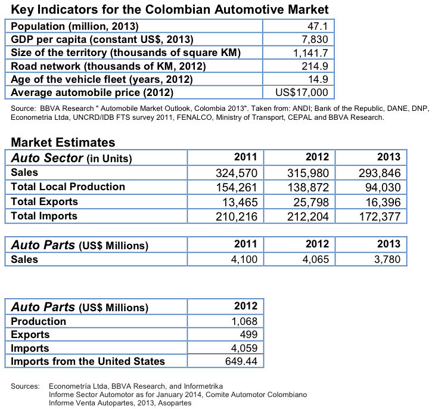

Colombia is a major player in the regional automotive market. The Colombian automotive sector experienced a decrease of 7 percent from 2012 to 2013. Despite this decline, 2013 was the third best year of auto sales ever in Colombia. Auto parts sales were US$3.780 billion, declining also 7 percent from 2012 to 2013.
According to the leading automotive parts industry association in Colombia, Asopartes among the reasons for this reduction are: a) new technologies have made auto parts last longer, b) sales underreporting c) an increase in the sale of illegal used auto parts, and d) smuggling (contraband of automotive parts).1
At the beginning of 2013 there were 9.3 million vehicle units in the country, according to data from the Ministry of Transportation. Of those, 507,355 were registered for transportation (freight and passengers). According to research conducted by the multinational banking group BBVA in 2013, Colombia’s vehicle stock will increase by 3.5 million between 2010 and 2020.2
The same study establishes that the automotive sector contributes to 4 percent of the country’s GDP and employs about 3.2 percent of the country’s population. Colombia currently ranks as the third largest automobile manufacturer in Latin America. In addition, after Brazil, Colombia is the second largest motorcycle producer in the region, with an annual output of 515,000 motorcycles.
A number of international auto manufacturers currently produce vehicles in Colombia. General Motors (GM), based in Bogota, has an annual capacity of about 100,000 units, and in 2013 opened a stamping plant to manufacture and export the body sections to markets in Central America and South America. Renault, based in Medellin, has an annual capacity of 80,000 units. Mazda Motor, also based in Bogota, has a capacity of 15,000 units annually. Automaker Daimler's subsidiary Daimler Colombia operates a CKD assembly facility in Bogota.3
68 brands and 267 models are found in the market. The biggest seller is Chevrolet, followed by Renault and Kia. Nissan has grown at a fast rate in recent years, and is in fourth place.4
In 2012, the percentage of nationally produced vehicles was 40 percent. The other 60 percent of vehicles were imported from South Korea, Mexico, India, Japan, Ecuador, China, and the United States. The high import percentage represents good opportunities for all imported parts and accessories, especially those from the United States, which are very well known and regarded nationwide.
Firms from more than 106 countries compete to supply the Colombian automotive parts market. The United States, Brazil, Japan and China have the highest market shares. Firms from the United States and Brazil compete with quality and state-of-the-art products, while firms from many Asian countries have obtained a larger market share pursuing a low price strategy and offering lower quality.
The annual production of automotive parts in Colombia is equivalent to US$1.068 billion of which 47 percent is exported (US$499 billion) to Venezuela, Ecuador, the United States, Germany, and South Africa. Imports represented US$4.059 billion. Main countries of origin are the United States (16 percent), China (14 percent), Japan (8 percent), and India (7 percent).5
Colombian end-users of automotive parts and accessories are numerous, varied, and difficult to quantify because of the wide variety of brands found in the local market and the number of motor vehicles imported.
83 percent of total Colombian vehicles are for private use; 14 percent are in public service and 3 percent are for official use (not including those owned by the Ministry of Transportation, the Ministry of Defense, and the Ministry of Foreign Relations).